手動（固定費用、按重量或按總金額計算）
手動（固定費用、按重量或按總金額計算）運送方式允許您為所有預先定義的運送方式設定固定費用，或根據重量及總金額來計算費用。
若要查看此方法如何應用於您的商店範例，請參閱下方的 範例 章節。
定義手動配送提供者
前往 設定 → 配送 → 配送提供者。系統將會顯示 配送提供者 視窗：
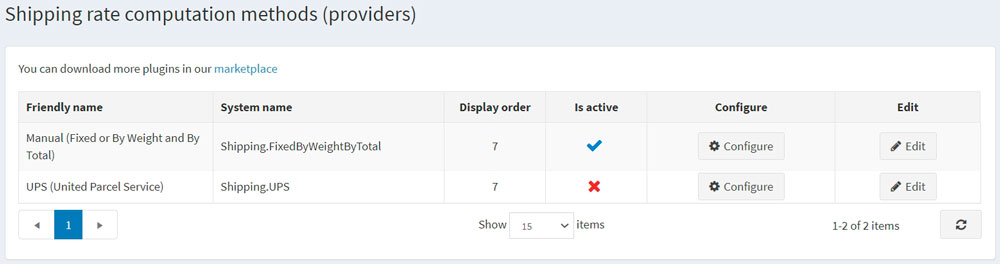
請依照下列步驟啟用手動配送費率計算方法：
- 在 Manual (fixed or by weight and by total) 列中，點擊 編輯 按鈕。
- 在 Is active 欄位中，勾選核取方塊。
- 點擊 更新 按鈕。該 false 選項將會變更為 true。
點擊清單中 Manual (fixed or by weight and by total) 選項旁邊的 設定 按鈕。
您可以透過點擊頁面上方的按鈕，將 固定費率 (Fixed rate) 配送費計算方式切換為 依重量/總計 (By weight/total) 計算方式。
設定固定費率
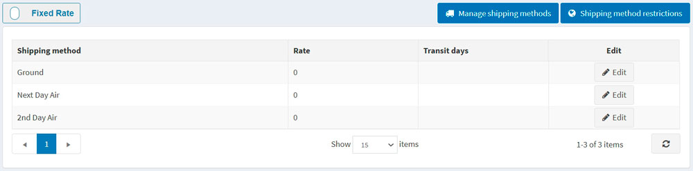
點擊物流方式旁邊的 編輯 (Edit) 按鈕，並為其輸入 費率 (Rate) 和 運送天數 (Transit days)（如有需要）。
點擊 更新 (Update)。
Note
您可以透過點擊
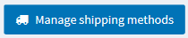
開啟「物流方式視窗」來新增或移除物流方式，並透過點擊上方的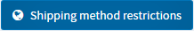
來針對特定國家限制某些物流方式。依重量/總計設定運費
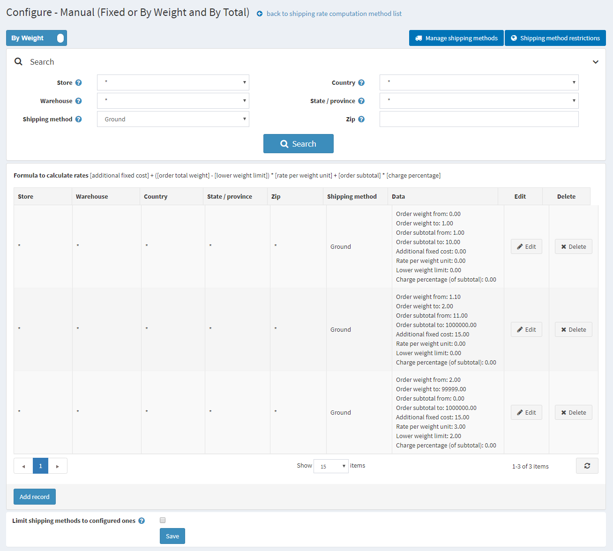
**依重量及總計運費（shipping by weight and by total）**選項允許您根據貨件的重量與總計金額設定不同的運費。根據貨件的重量與總計金額收取不同費用的能力，有助於公司在寄送重型商品時控制運費，同時又能為購買輕型產品的顧客提供合理的運費。
使用公式 [額外固定成本] + ([訂單總重量] - [重量下限]) × [單位重量費率] + [訂單小計] × [收費百分比] 來計算費用，其中：
- 額外固定成本（additional fixed cost） 是指重量低於特定水平（重量下限）時的貨件成本。
- 單位重量費率（rate per weight unit） 是指超過重量下限後，每單位重量的成本。
- 訂單小計與收費百分比（order subtotal and charge percentage） 是根據訂單小計計算額外成本的參數。
例如，如果您有以下運送條件：
- 若重量為 0 到 1 磅，且訂單小計為 $1 到 $10，則成本為 $10。您應該建立下列運送規則：
- 訂單重量起始：0
- 訂單重量結束：1
- 訂單小計起始：1
- 訂單小計結束：10
- 額外固定成本：10
- 重量下限：0
- 單位重量費率：0
- 若重量為 1.1 磅到 2 磅，且訂單小計為 $11 到 $1,000,000，則成本為 $15。您應該建立下列運送規則：
- 訂單重量起始：1.000
- 訂單重量結束：2
- 訂單小計起始：11
- 訂單小計結束：1000000
- 額外固定成本：15
- 重量下限：0
- 單位重量費率：0
- 若超過 2 磅，每額外 0.5 磅的成本為 $3。您應該建立下列運送規則：
- 如果您的固定成本為 $15，則超過 2 磅後每磅的成本為 $6
- 訂單重量起始：2.0001
- 訂單重量結束：99999
- 額外固定成本：15
- 重量下限：2
- 單位重量費率：6
Note
超出部分的重量將按比例收費； 例如，對於 2.1 磅的貨件，$15 + (0.1 * 6) = $15.6 將會被計費。
要新增運送規則，請點擊 新增記錄。系統將顯示 新增記錄 視窗：
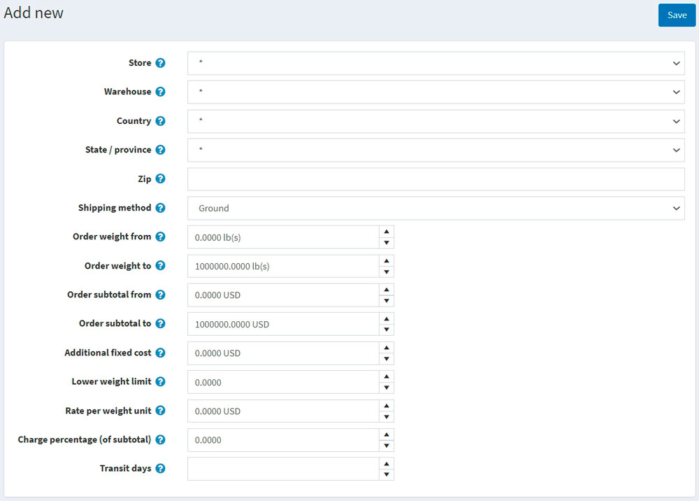
定義以下資訊：
- 商店：將應用此計算費用的商店。選擇 * 以將規則套用到所有商店。
- 倉庫：進行運送作業的倉庫。選擇 * 以將規則套用到所有倉庫。
- 國家、州/省、郵遞區號：貨件的目的地。
- 從預先建立的選項清單中選擇一個 運送方式。使用上方的 管理運送方式 來新增/移除運送方式，或前往 設定運送方式 章節了解更多資訊。
- 透過填寫 訂單重量起始 與 訂單重量結束 欄位來建立您的重量設定。如果顧客的貨件重量落在此範圍內，額外成本將會固定並根據此記錄進行計算。
- 使用 訂單小計起始、訂單小計結束、額外固定成本、重量下限、單位重量費率、收費百分比（小計的百分比） 欄位，為此記錄設定定價規則。
- 定義 轉運天數 欄位，該欄位定義了預計送達的天數。
Note
請確保 設定 → 設定 → 運送設定 → 考慮關聯商品的尺寸與重量 設定為「開啟（true）」。
點擊 儲存。
Note
如果您希望將顧客僅限制在該畫面上設定的運送方式，請勾選頁面底部的 將運送方式限制為已設定的方式 核取方塊。
設定運送方式
商店擁有者可以定義在「手動（固定金額或依重量與總價）」提供者中所使用的運送方式清單。若要管理運送方式：
前往 設定 → 運送 → 運送提供者。接著點擊「手動（固定金額或依重量與總價）」提供者旁邊的 設定 按鈕。此時將會顯示設定視窗：
點擊 管理運送方式；接著將會顯示「運送方式視窗」：
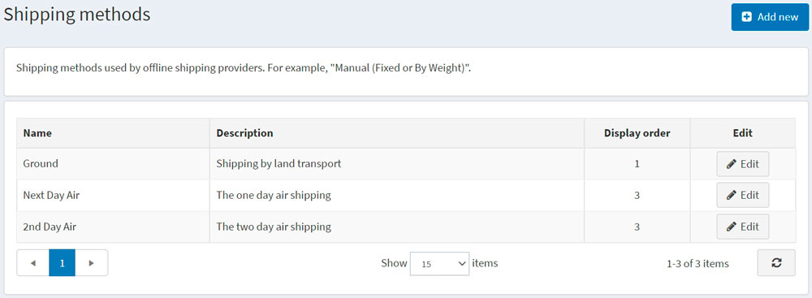
點擊 新增 按鈕；「新增運送方式」視窗將會如下顯示：
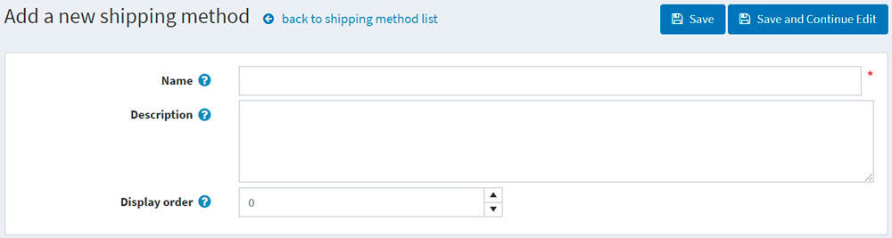
為新紀錄定義以下欄位：
- 名稱：顧客所看到的運送方式名稱。
- 說明：顧客所看到的運送方式說明。
- 顯示順序：運送方式的顯示順序。值為 1 代表在清單的最上方。
點擊 儲存。
Note
您可以在「運送方式」視窗中點擊 編輯，以編輯如上述所示的現有運送方式。
運送方式限制
商店管理者可以在特定國家/地區定義運送方式的限制。若要執行此動作，請前往 設定 → 運送 → 運送提供者。點擊 Manual (fixed or by weight and by total) 提供者旁邊的 設定 按鈕。此時將會顯示設定視窗：
點擊 運送方式限制；此時將會顯示 運送方式限制 視窗：
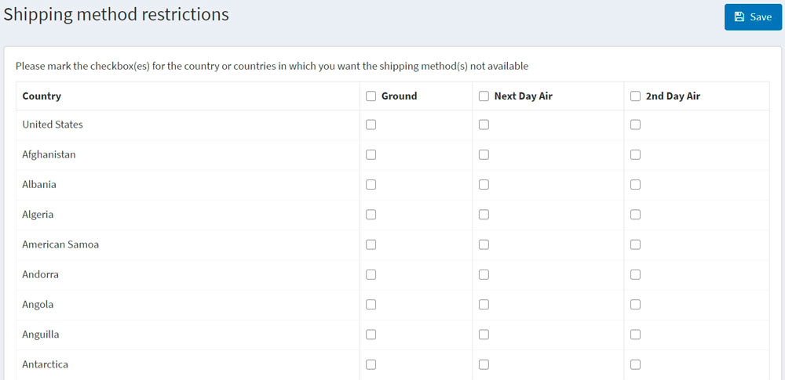
選取您想要在特定國家/地區停用的一種或多種運送方式。
如有需要，您可以選取該限制欄位以套用至所有國家/地區。
點擊 儲存。
範例
假設您有一家位於美國的商店，提供美國境內以及運送到加拿大的服務。您設定了三種可用的運送方式：
- Ground：允許透過陸路運輸運送。
- Next day air：提供次日航空運送。
- 2nd day air：提供兩日航空運送。
Tip
您可以點擊「設定 - 手動（固定費用或依重量與總計）」頁面上的 管理運送方式 按鈕來新增您自己的運送方式。
接著，假設運費取決於訂單總金額與運送地址。例如：
- 若顧客的訂單金額為 $150，我們僅針對美國境內提供 Ground 方式的免運費服務。若訂單總額低於 $150，我們將收取 $10。美國境內的配送時間為 5 天。
- 針對加拿大，顧客需訂購金額達 $250 的商品，才能透過 Ground 方式享受免運費。若訂單總額低於 $250，我們將收取 $20。此情況下的配送時間為 7 天。
- 若顧客需要 Next day air 配送，美國境內的運費為 $60。假設您希望停用加拿大地區的 Next day air 選項。
- 若顧客願意多等一天，我們建議使用 2nd day air 運送，美國與加拿大地區的費用皆為 $40。
考量到上述所有需求，我們將在「設定 - 手動（固定費用或依重量與總計）」頁面上設定付款方式如下：
Ground 方式
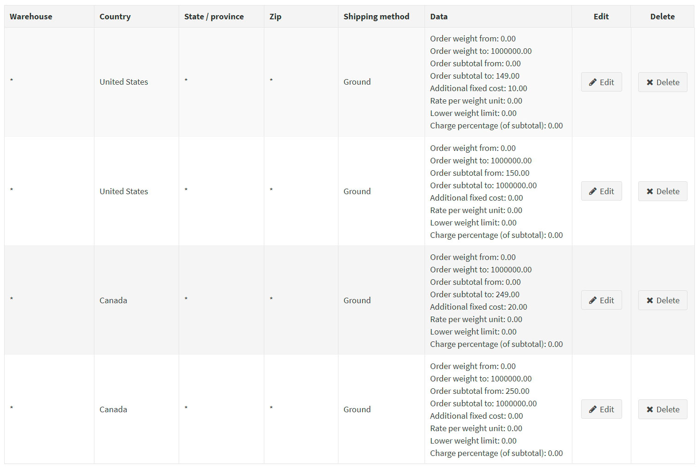
Next day air 方式
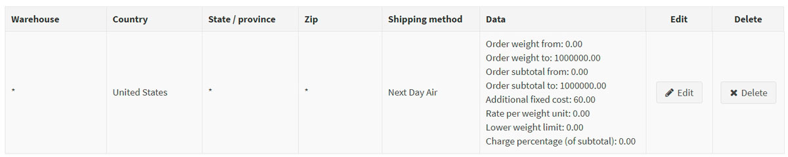
2nd day air 方式
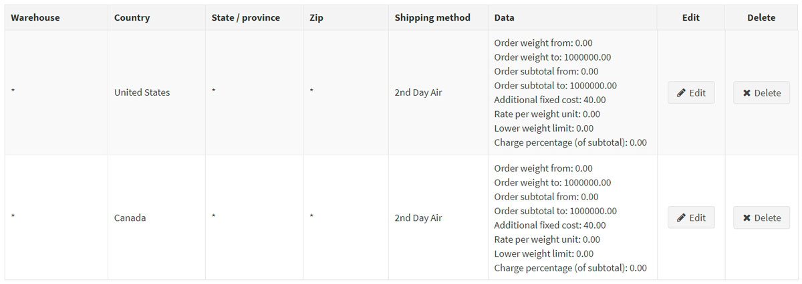
若要停用加拿大地區的 Next day air 選項，請點擊 運送方式限制 按鈕，並依照下列方式填寫「運送方式限制」：
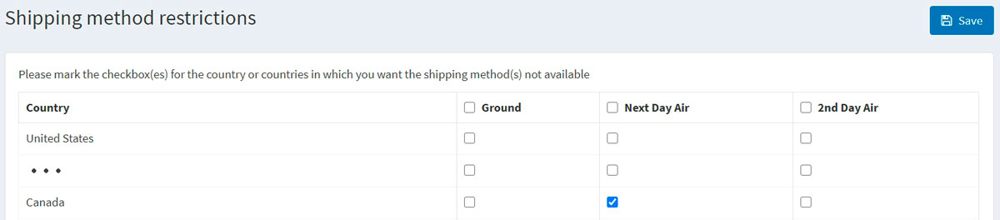
讓我們看看在前端商店中運送選項的樣貌
每當來自美國的顧客造訪商品頁面（或購物車頁面）時，運費預估將顯示如下：
Tip
順帶一提，您可以透過取消勾選 設定 → 設定 → 運送設定 頁面上的 啟用運費預估（購物車頁面） 以及 啟用運費預估（商品頁面） 核取方塊來停用運費預估功能。
當顧客繼續進行運送細節流程時，將會顯示下列選項：
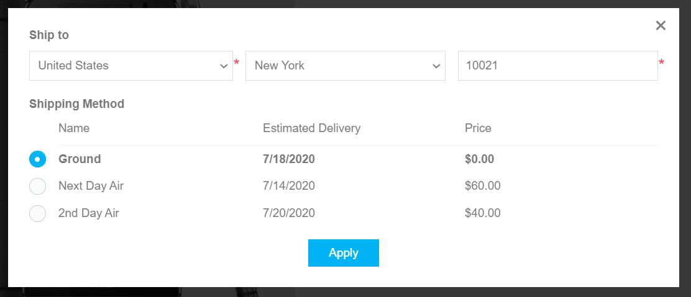
每當顧客在運費預估視窗中選擇加拿大時，將會顯示下列選項：
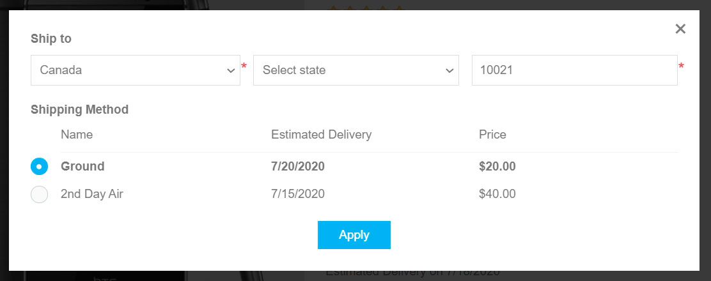
如您所見，Next day air 選項已不再提供。
Tip
如果您想提供取貨點給顧客，請參閱 取貨點 章節以了解如何進行設定。